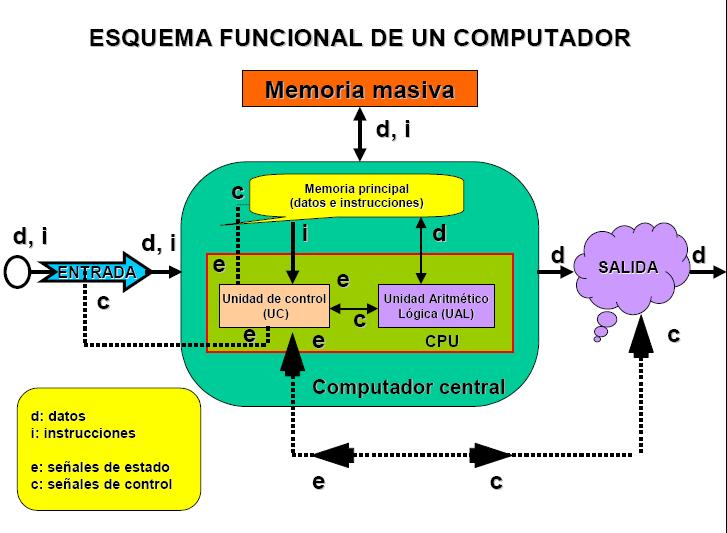

El siguiente diagrama corresponde a los primeros computadores, pero sigue siendo conceptualmente válido hoy día.
Antiguamente cada unidad representada en la figura correspondía físicamente a un armario o módulo independiente,
estando unas unidades conectadas a otras por medio de “mangueras” de cables.
Era fácil identificar a simple vista cada una de las unidades. En la actualidad, y debido principalmente al desarrollo de la
microelectrónica, varias unidades pueden estar en un mismo armario, en una misma tarjeta de circuitos integrados,
o incluso (como ocurre con los microprocesadores) en un mismo circuito integrado.
Un computador moderno puede tener gran cantidad (cientos) de unidades de entrada o salida.
Se denominan periféricos de un computador al conjunto de unidades de E/S y de memoria masiva.
Se denominan COMPUTADOR CENTRAL a la memoria principal, UC y ALU.
La unidad de procesamiento central o CPU es el conjunto de unidad de control y unidad aritmético-lógica.

Partes de un ordenador
UNIDAD DE ENTRADA (E):
Es el dispositivo por donde se introducen en el computador los datos e instrucciones.
En estas unidades se transforman las informaciones de entrada en señales binarias de naturaleza eléctrica.
Un mismo computador puede tener distintas unidades de entrada. Son unidades de entrada: el teclado de un
microcomputador, el teclado de un terminal, un digitalizador, una lectora de tarjetas de crédito, etc.
UNIDAD DE SALIDA (S):
Es un dispositivo por donde se obtienen los resultados de los programas ejecutados en el computador.
La mayor parte de estas unidades (un computador suele tener varias de ellas) transforman las señales eléctricas
binarias en caracteres escritos o visualizados. Son dispositivos de salida, unidades tales como una pantalla o monitor,
una impresora o un registrador gráfico.
La E/S es el medio establecido para la comunicación de la CPU con su entorno exterior (es más un concepto que algo palpable).
Mediante la definición de una cierta interfaz, la CPU puede recibir datos de los dispositivos que la rodean (denominados periféricos),
operar con dicha información, y enviar los resultados generados hacia dichos dispositivos.
MEMORIA (M)
Es la unidad donde se almacenan tanto los datos como las instrucciones.
Existen dos tipos básicos de memoria, diferenciados principalmente por su velocidad.
* Memoria principal, central, o interna.
Es la memoria que actúa con mayor velocidad, y está ligada
directamente a las unidades más rápidas del computador (unidad de control y unidad aritmético-lógica).
Para que un programa se ejecute debe estar cargado (almacenado) en la memoria principal.
En los computadores actuales está formada por circuitos electrónicos integrados.
La memoria está dividida en posiciones (denominadas también palabras de memoria) de un determinado número de bits.
Para leer o escribir una información es necesario dar la dirección de la posición.
Normalmente hay una zona de la memoria en la que solo se puede leer (memoria ROM)
y que es permanente (al desconectar el computador su información no se pierde),
y otra en la que se puede leer y escribir (memoria RAM) y que es volátil.
* Memoria masiva auxiliar, secundaria o externa.
La memoria principal, aunque es muy rápida (se tarda del orden de un microsegundo o menos en leer o escribir en ella),
no tiene gran capacidad para almacenar información. Para guardar masivamente información se utilizan otros tipos de memoria,
tales como discos y cintas magnéticas, y discos ópticos, que son más lentos pero suelen tener más capacidad que la memoria
principal (del orden de mil veces más lentos y más capaces). El conjunto de estas unidades se denomina memoria masiva auxiliar,
o memoria externa, o memoria secundaria. Frecuentemente los datos y programas se graban (introduciéndolos por las unidades
de entrada) en la memoria masiva; de esta forma, cuando se ejecute varias veces un programa o se utilicen repetidamente unos
datos, no es necesario darlos de nuevo a través del dispositivo de entrada. La información guardada en un disco o cinta regrabable
permanece indefinidamente hasta que el usuario la borre expresamente.
UNIDAD ARITMÉTICO-LÓGICA o ALU (UAL):
Esta unidad contiene los circuitos electrónicos con los que se hacen las operaciones de tipo aritmético (sumas, restas, etc.)
y de tipo lógico (comparar dos números, hacer operaciones del álgebra de Boole binaria, etc.).
Esta unidad también se puede denominar unidad de tratamiento o camino o ruta de datos, ya que aparte de considerar
los circuitos específicos que realizan las operaciones aritmético-lógicas (ALU, propiamente dicha), se consideran también
otros elementos auxiliares por donde se transmiten o almacenan temporalmente (registros) los datos al objeto de operar con ellos.
UNIDAD DE CONTROL (UC):
La unidad de control detecta señales de estado procedentes de las distintas unidades, indicando su situación o condición de funcionamiento.
Capta de la memoria una a una las instrucciones del programa, y genera, de acuerdo con el código de operación de la instrucción
captada y con las señales de estado, señales de control dirigidas a todas las unidades, monitorizando las operaciones que implican
la ejecución de la instrucción.
BUS:
Es un grupo de “cables” (líneas digitales) que interconectan los bloques funcionales de un ordenador,
permitiendo la interacción entre los mismos.
Visto de otro modo, los componentes se enlazan al bus para conectarse así con el resto de elementos.
Ya que el bus une a todos los elementos entre sí, podrían aparecer conflictos si varios de ellos intentan utilizar
el bus al mismo tiempo. Esto obliga a establecer una regla importante: en cualquier instante, sólo un componente
puede colocar información en el bus.
INTERFACES:
Un computador es un sistema complejo formado por distintas unidades, módulos o dispositivos ensamblados adecuadamente
uno con otro. En muchos casos es necesario adaptar las características (niveles eléctricos, velocidad, etc.) de dos módulos
que se acoplan, para que la conjunción de los dos funcione adecuadamente, o entre un módulo y su entorno.
Los interfaceson los elementos adaptadores que sirven de comunicación entre los dos módulos.
El concepto de interfaz se aplica también a los programas, de forma que puede hablarse de la
“interfaz entre dos programas” o “interfaz de usuario” (que es el conjunto de instrucciones que hace
que un programa o aplicación intercambie información con el usuario del mismo).
GENERADOR DE PULSOS
La unidad de control tiene un reloj o generador de pulsos que sincroniza todas las operaciones elementales del computador.
El período de esta señal se denomina “tiempo de ciclo”, y está comprendido aproximadamente entre nanosegundos
y varios microsegundos, dependiendo de la CPU.
La frecuencia del reloj –inverso del tiempo de ciclo- (que suele darse en millones de ciclos/segundo, o Megahercios,
abreviadamente Mhz; o en miles de millones de ciclos/segundo, o Gigahercios, abreviadamente Ghz)
es un parámetro que en parte determina la velocidad de funcionamiento del computador.